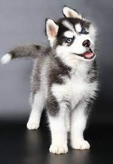

Енот
Енот Это собака
Соба́ка (лат. Canis lupus familiaris) — домашнее животное, одно из наиболее распространённых (наряду с кошкой) животных-компаньонов. Первоначально домашняя собака была выделена в отдельный биологический вид (лат. Canis familiaris) Линнеем в 1758 году, в 1993 году реклассифицирована Смитсоновским институтом и Американской ассоциацией териологов в подвид волка (Canis lupus)[2]. В русскоязычных письменных источниках слово «собака» в значении соответствующего животного встречается по крайней мере с 1475 года (начиная с грамоты князя Андрея Васильевича Меньшого Кириллову монастырю)
Енот
Ено́ты (лат. Procyon) — род хищных млекопитающих семейства енотовых. Представители рода — обитатели Америки. На территории Евразии и, в частности, в России интродуцирован единственный вид — енот-полоскун. В России енота изначально знали по шкуркам, которые назывались «генеттовыми мехами», потому что зверек с полосатым хвостом напоминает генету. Позднее это название превратилось в «генот» или енот. Английское название raccoon, заимствованное и в некоторые другие языки, происходит из поухатана — одного из языков американских индейцев, где енота называли ärähkun, от ärähkuněm, что означает «скребёт руками»; во многих европейских и азиатских языках енота буквально называют «медведь-полоскун», «моющий медведь». Латинское (греческого происхождения) название Procyon значит «пред-собака», «перед собакой»; так же называется звезда Процион в созвездии Малого Пса.
Кот
Ко́шка, или дома́шняя ко́шка (лат. Félis silvéstris cátus), — домашнее животное, одно из наиболее популярных[1] (наряду с собакой) «животных-компаньонов»[2][3][4]. С точки зрения научной систематики, домашняя кошка — млекопитающее семейства кошачьих отряда хищных.